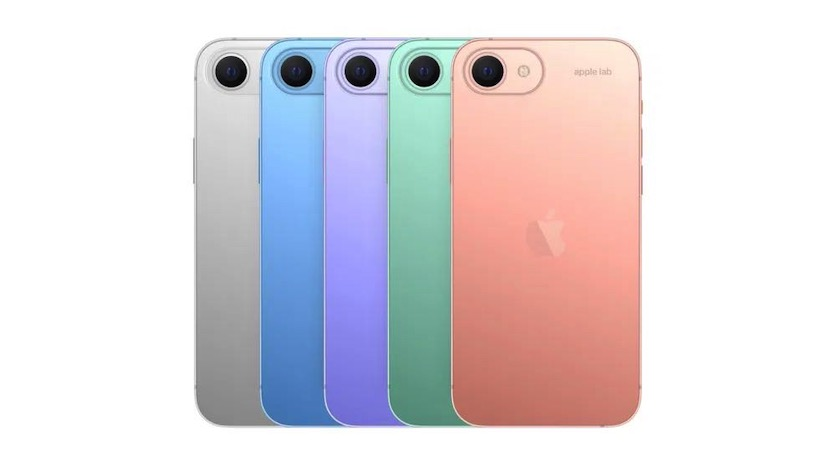

В среднем сегменте идёт нешуточная борьба между производителями смартфонов. При этом у каждого вендора своё видение идеального гаджета. Знакомимся с Redmi Note 10 Pro — обновлённым флагманом популярной линейки, получившим любопытные характеристики.
Новый облик
Внешний вид Redmi Note 10 Pro заметно отличается от предыдущего флагмана серии. От предшественника «десятка» унаследовала лишь диагональ экрана и ряд мелочей в дизайне.
Камера
Redmi Note 10 Pro — один из первых аппаратов среднего класса, оснащённый 108-мегапиксельным сенсором ISOCELL HM2 от Samsung
Автономность
Redmi Note 10 Pro получил ёмкий аккумулятор на 5020 мАч. От одного заряда аппарат способен проработать до двух дней — и это с повышенной герцовкой и яркостью чуть ниже средней.
Безрамочный iPhone SE (2023) показали на концепт-рендерах
Инсайдер под ником Apple Lab опубликовал серию изображений с предполагаемым дизайном следующего «бюджетного» iPhone. Согласно эскизам, новинка впервые в серии лишится широких рамок дисплея и аппаратной кнопки Home на фронтальной панели.

Концепции
На представленных концептах iPhone SE изображён с тонкими рамками по периметру дисплея и врезанной в матрицу фронтальной камерой. При этом в качестве альтернативы технологии Face ID вендор предположительно использует сканер отпечатков пальцев, совмещённый с кнопкой питания. Основная камера устройства имеет всего один сенсор, но размер его объектива больше, чем у предшественника.
Внешний вид
По мнению автора рендеров, Apple сохранит идею заимствования дизайна у гаджетов прошлых поколений. К примеру, оригинальный iPhone SE получил узнаваемый внешний вид модели iPhone 5, а в 2020-м его преемник оказался схож с iPhone 8. Как утверждает информатор, в качестве «основы» при создании нового представителя линейки американская компания выберет iPhone 12.
Samsung Galaxy Z Fold3 может лишиться аппаратных кнопок
Компания Samsung запатентовала оригинальный дизайн смартфона, который может использоваться в модели Galaxy Z Fold3. Показанный в документе гаджет полностью избавлен от аппаратных кнопок в пользу сенсорных зон с поддержкой жестового управления.
Патент
Согласно патенту, пользователи смогут самостоятельно настроить тип жестов для выполнения определённых действий при касании активных областей на боковых гранях устройства. В качестве возможных сценариев работы такой системы Samsung описывает включение смартфона простым прикосновением. Инженеры производителя подчёркивают важность использования виртуальных элементов управления в качестве альтернативы аппаратным решениям в связи с тенденцией к уменьшению толщины современных гаджетов.
Помимо отсутствия физических кнопок, Samsung Galaxy Z Fold 3 может получить защитное стекло Ultra Thing Glass (UTG 2.0), допускающее работу со стилусом S Pen. Предположительно новинку покажут в августе 2021 года.
Дизайн Google Pixel 6 Pro от надёжного источника
Инсайдер под ником OnLeaks опубликовал качественную 3D-визуализацию будущего флагмана Google. Помимо демонстрации деталей дизайна устройства, авторитетный информатор также назвал некоторые технические характеристики ещё не анонсированного гаджета.
Техническое оснащение
Согласно источнику, Google Pixel 6 Pro оснастят 6,67-дюймовым загнутым по бокам дисплеем. В верхней центральной части экрана разместится вырез для фронтального модуля. В состав тыльной камеры устройства войдут три сенсора, при этом аппарат получит телеобъектив и широкоугольное стекло.
Габариты смартфона составят 163,9 x 75,8 x 8,9 мм. Ожидается, что Pixel 6 Pro получит подэкранный сканер отпечатков пальцев, стереодинамики, порт USB Type-C и катушку для беспроводной зарядки. Также стало известно, что Google откажется от маркировки XL в названии старшей модели серии в пользу приставки Pro.
Дата релиза
По слухам, новые смартфоны Google Pixel 6 будут представлены в августе 2021 года.

 Telephone
Telephone  Mail
Mail